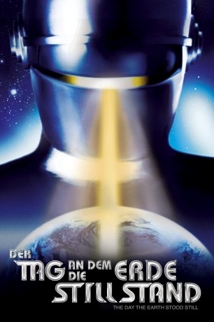

IMDB-Wertung: 7.8 / 10
IMDB-Wertung: 7.8 / 10  Metascore:
Metascore: 
Ein Außerirdischer landet zusammen mit einem Roboter auf der Erde, um die Menschheit zum Frieden aufzurufen. Die Menschen begegnen ihm jedoch mit Misstrauen und verletzen ihn schwer.
Alternativ: The Day the Earth Stood Still
Auszeichnungen: 1 GoldenGlobes gewonnen
 IMDB-Wertung: 7.8 / 10 Metascore:
Ein Außerirdischer landet zusammen mit einem Roboter auf der Erde, um die Menschheit zum Frieden aufzurufen. Die Menschen begegnen ihm jedoch mit Misstrauen und verletzen ihn schwer.
Jahr: 1951
Dauer: 92 Minuten
FSK: 12
Land: USA Studio: Twentieth Century - Fox Film CorporationTonspuren: DTS - ,
Untertitel: Deutsch,
Auflösung: 1080p (1920x1080) Größe: 8263 MB
Regisseur:  Robert Wise
Robert Wise
Drehbuch: Edmund H. North
Soundtrack:
Darsteller:
 Patricia Neal als Helen Benson
Patricia Neal als Helen Benson Hugh Marlowe als Tom Stevens
Hugh Marlowe als Tom Stevens Chet Brandenburg als Farmer , uncredited
Chet Brandenburg als Farmer , uncredited Spencer Chan als Scientific Delegate , uncredited
Spencer Chan als Scientific Delegate , uncredited Roy Engel als Government Man , uncredited
Roy Engel als Government Man , uncredited Franklyn Farnum als Extra in Office Building Corridor , uncredited
Franklyn Farnum als Extra in Office Building Corridor , uncredited James Gonzalez als Military Officer at Pentagon Meeting , uncredited
James Gonzalez als Military Officer at Pentagon Meeting , uncredited Harry Harvey als Taxi Driver , uncredited
Harry Harvey als Taxi Driver , uncredited Harry Lauter als Platoon Leader , uncredited
Harry Lauter als Platoon Leader , uncredited David McMahon als Air Force Sergeant , uncredited
David McMahon als Air Force Sergeant , uncredited Harold Miller als Military Officer at Pentagon Meeting , uncredited
Harold Miller als Military Officer at Pentagon Meeting , uncredited Robert Osterloh als Major White , uncredited
Robert Osterloh als Major White , uncredited 'Snub' Pollard als Cab Driver , uncredited
'Snub' Pollard als Cab Driver , uncredited James Seay als Government Man , uncredited
James Seay als Government Man , uncredited Charles Sherlock als Government Man , uncredited
Charles Sherlock als Government Man , uncredited Olan Soule als Mr. Krull , uncredited
Olan Soule als Mr. Krull , uncredited Charles Tannen als Voice of Radio Announcer , uncredited
Charles Tannen als Voice of Radio Announcer , uncreditedDatei: X:\1950-1959\Tag, an dem die Erde stillstand, Der (1951, FSK12, 1920x1080).mkv seit 21.09.2017
Festplatte: HD 1900-1970
 Es gibt insgesamt 141 Filme in der Gruppe '1950-1959'
Es gibt insgesamt 141 Filme in der Gruppe '1950-1959'